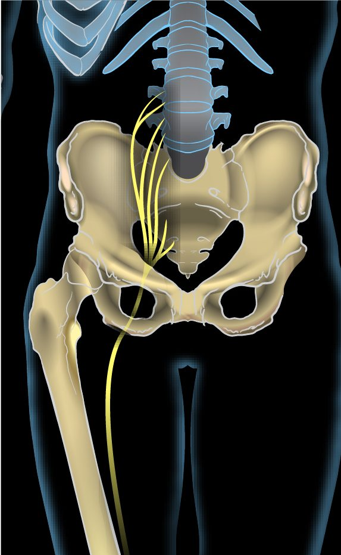

Información divulgativa. No sustituye la valoración de un profesional sanitario. Ante síntomas neurológicos bruscos (boca torcida, debilidad de un lado, dificultad para hablar) llama al 112.


Qué es
Una radiculopatía es la irritación o compresión de una raíz nerviosa a su salida de la columna vertebral. Cuando afecta a las raíces lumbares bajas que forman el nervio ciático (L5 y S1, sobre todo), produce la ciática: un dolor que baja desde la zona lumbar o la nalga por la parte posterior o lateral de la pierna, a menudo hasta el pie. En el cuello, la radiculopatía cervical produce dolor que baja por el brazo.
La ciática es muy frecuente: alrededor del 40 % de las personas la tendrá alguna vez, sobre todo entre los 30 y los 50 años.
Causas
- Hernia de disco: la causa más frecuente en menores de 50 años. El núcleo blando del disco intervertebral sale a través de una rotura de su envoltura y presiona la raíz, que además se inflama.
- Estenosis del canal y de los agujeros por los que salen las raíces, por la artrosis de la columna: más frecuente a partir de los 60 años.
- Espondilolistesis: una vértebra se desliza sobre otra.
- Raramente: tumores, infecciones o fracturas.
Síntomas
- Dolor en la pierna, a menudo más intenso que el de la espalda, que sigue el recorrido de la raíz.
- Hormigueo o acorchamiento en el pie o la pierna.
- Debilidad: dificultad para caminar de talones (L5) o de puntillas (S1).
- Empeora al toser, estornudar o estar mucho tiempo sentado.
- La estenosis de canal lumbar produce un cuadro distinto: dolor, pesadez o debilidad de las piernas al caminar, que obliga a pararse y mejora al sentarse o inclinarse hacia delante (claudicación neurógena), por ejemplo apoyándose en el carro de la compra.
Señales de alarma: síndrome de cola de caballo
Es una urgencia quirúrgica. Hay que ir a urgencias inmediatamente si aparece:
- Pérdida de control de la orina o las heces, o dificultad para orinar.
- Acorchamiento en la zona genital, el periné o las nalgas («en silla de montar»).
- Debilidad de las dos piernas o que empeora rápidamente.
También requieren valoración urgente la fiebre, el antecedente de cáncer, la pérdida de peso sin causa o un traumatismo importante.
Diagnóstico
Es clínico: la historia y la exploración (maniobra de Lasègue: levantar la pierna estirada reproduce el dolor). Las pruebas de imagen no son necesarias al principio, porque la mayoría mejora sola y porque las hernias aparecen en la resonancia en muchas personas sin síntomas. Se hace una resonancia si hay señales de alarma, debilidad progresiva o si el dolor no mejora tras 6-8 semanas y se plantea cirugía. El electromiograma ayuda en casos dudosos.
Tratamiento
Alrededor del 90 % mejora en 6-12 semanas sin cirugía:
- Mantenerse activo dentro de lo que permita el dolor: el reposo en cama no ayuda y retrasa la recuperación.
- Analgésicos y antiinflamatorios durante poco tiempo. Los fármacos para el dolor neuropático (pregabalina, gabapentina) no han demostrado utilidad en la ciática aguda. Los corticoides orales tienen un beneficio pequeño.
- Fisioterapia y ejercicio progresivo.
- Infiltraciones epidurales de corticoides: alivio a corto plazo en algunos pacientes.
Cirugía (microdiscectomía, descompresión):
- Urgente en el síndrome de cola de caballo o con debilidad grave o progresiva.
- En la ciática que no mejora tras 6-12 semanas de tratamiento: la cirugía alivia más rápido el dolor, aunque al cabo de uno o dos años los resultados se parecen a los del tratamiento conservador. La decisión es compartida con el paciente.
- En la estenosis de canal con síntomas importantes, la descompresión mejora la capacidad para caminar.
Ver neurocirugía.
Prevención
- Ejercicio regular para fortalecer la musculatura del tronco.
- Mantener un peso saludable y no fumar (el tabaco acelera la degeneración del disco).
- Técnicas correctas para levantar peso y evitar estar sentado mucho tiempo seguido.
Historia · Medicapedia
La historia de esta enfermedad
Cómo se describió, quién la estudió y cómo ha cambiado su tratamiento a lo largo de los siglos, en Medicapedia, nuestra enciclopedia hermana de historia de la medicina.
Fuentes
- Jensen RK, et al. Diagnosis and treatment of sciatica. BMJ. 2019;367:l6273.
- NICE. Low back pain and sciatica in over 16s (NG59).
- Peul WC, et al. Surgery versus prolonged conservative treatment for sciatica. N Engl J Med. 2007;356:2245-56.
- Mathieson S, et al. Trial of pregabalin for acute and chronic sciatica (PRECISE). N Engl J Med. 2017;376:1111-20.
- Katz JN, et al. Diagnosis and management of lumbar spinal stenosis: a review. JAMA. 2022;327:1688-99.